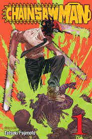
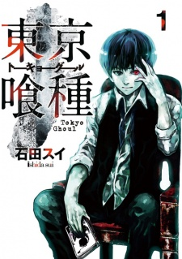
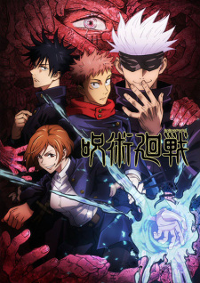
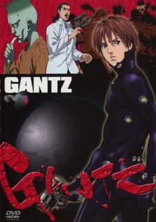
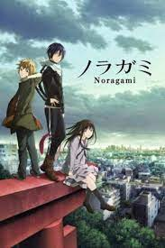
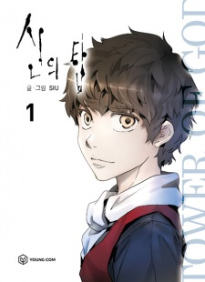
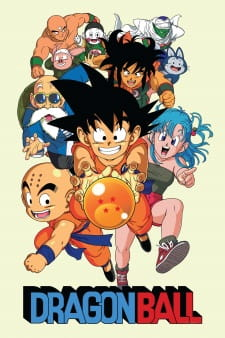
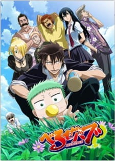
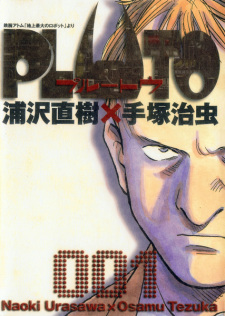
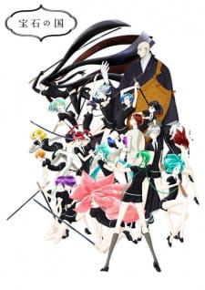

Action
Chainsaw Man

Denji has a simple dream—to live a happy and peaceful life, spending time with a girl he likes. This is a far cry from reality, however, as Denji is forced by the yakuza into killing devils in order to pay off his crushing debts. Using his pet devil Pochita as a weapon, he is ready to do anything for a bit of cash.Unfortunately, he has outlived his usefulness and is murdered by a devil in contract with the yakuza. However, in an unexpected turn of events, Pochita merges with Denji's dead body and grants him the powers of a chainsaw devil. Now able to transform parts of his body into chainsaws, a revived Denji uses his new abilities to quickly and brutally dispatch his enemies. Catching the eye of the official devil hunters who arrive at the scene, he is offered work at the Public Safety Bureau as one of them. Now with the means to face even the toughest of enemies, Denji will stop at nothing to achieve his simple teenage dreams.
Rating - 8.6/10
Chapters - 97
Naruto
 Whenever Naruto Uzumaki proclaims that he will someday become the Hokage—a title bestowed upon the best ninja in the Village Hidden in the Leaves—no one takes him seriously. Since birth, Naruto has been shunned and ridiculed by his fellow villagers. But their contempt isn't because Naruto is loud-mouthed, mischievous, or because of his ineptitude in the ninja arts, but because there is a demon inside him. Prior to Naruto's birth, the powerful and deadly Nine-Tailed Fox attacked the village. In order to stop the rampage, the Fourth Hokage sacrificed his life to seal the demon inside the body of the newborn Naruto.And so when he is assigned to Team 7—along with his new teammates Sasuke Uchiha and Sakura Haruno, under the mentorship of veteran ninja Kakashi Hatake—Naruto is forced to work together with other people for the first time in his life. Through undergoing vigorous training and taking on challenging missions, Naruto must learn what it means to work in a team and carve his own route toward becoming a full-fledged ninja recognized by his village.
Whenever Naruto Uzumaki proclaims that he will someday become the Hokage—a title bestowed upon the best ninja in the Village Hidden in the Leaves—no one takes him seriously. Since birth, Naruto has been shunned and ridiculed by his fellow villagers. But their contempt isn't because Naruto is loud-mouthed, mischievous, or because of his ineptitude in the ninja arts, but because there is a demon inside him. Prior to Naruto's birth, the powerful and deadly Nine-Tailed Fox attacked the village. In order to stop the rampage, the Fourth Hokage sacrificed his life to seal the demon inside the body of the newborn Naruto.And so when he is assigned to Team 7—along with his new teammates Sasuke Uchiha and Sakura Haruno, under the mentorship of veteran ninja Kakashi Hatake—Naruto is forced to work together with other people for the first time in his life. Through undergoing vigorous training and taking on challenging missions, Naruto must learn what it means to work in a team and carve his own route toward becoming a full-fledged ninja recognized by his village.
Rating - 8/10
Chapters - 700
Tokyo Ghoul

Lurking within the shadows of Tokyo are frightening beings known as "ghouls," who satisfy their hunger by feeding on humans once night falls. An organization known as the Commission of Counter Ghoul (CCG) has been established in response to the constant attacks on citizens and as a means of purging these creatures. However, the problem lies in identifying ghouls as they disguise themselves as humans, living amongst the masses so that hunting prey will be easier. Ken Kaneki, an unsuspecting university freshman, finds himself caught in a world between humans and ghouls when his date turns out to be a ghoul after his flesh.Barely surviving this encounter after being taken to a hospital, he discovers that he has turned into a half-ghoul as a result of the surgery he received. Unable to satisfy his intense craving for human meat through conventional means, Kaneki is taken in by friendly ghouls who run a coffee shop in order to help him with his transition. As he begins what he thinks will be a peaceful new life, little does he know that he is about to find himself at the center of a war between his new comrades and the forces of the CCG, and that his new existence has caught the attention of ghouls all over Tokyo.
Rating - 8.5/10
Episodes - 144
Jujutsu Kaisen

Hidden in plain sight, an age-old conflict rages on. Supernatural monsters known as "Curses" terrorize humanity from the shadows, and powerful humans known as "Jujutsu" sorcerers use mystical arts to exterminate them. When high school student Yuuji Itadori finds a dried-up finger of the legendary Curse Sukuna Ryoumen, he suddenly finds himself joining this bloody conflict.
Attacked by a Curse attracted to the finger's power, Yuuji makes a reckless decision to protect himself, gaining the power to combat Curses in the process but also unwittingly unleashing the malicious Sukuna into the world once more. Though Yuuji can control and confine Sukuna to his own body, the Jujutsu world classifies Yuuji as a dangerous, high-level Curse who must be exterminated.
Detained and sentenced to death, Yuuji meets Satoru Gojou—a teacher at Jujutsu High School—who explains that despite his imminent execution, there is an alternative for him. Being a rare vessel to Sukuna, if Yuuji were to die, then Sukuna would perish too. Therefore, if Yuuji were to consume the many other remnants of Sukuna, then Yuuji's subsequent execution would truly eradicate the malicious demon. Taking up this chance to make the world safer and live his life for a little longer, Yuuji enrolls in Jujutsu High, jumping headfirst into a harsh and unforgiving battlefield.
Rating - 8.5/10
Chapters - 210
Gantz 1

Lonely high school student Kei Kurono isolates himself out of a growing cynicism toward his fellow man and the cruelty they are capable of enacting. One day, while waiting to take the subway to school, Kei's classmate Masaru Katou leaps onto the tracks in an effort to save a drunk man. Driven by an uncharacteristic desire to rescue someone else, Kei follows Katou down into danger. While successful in saving him, the two boys are killed by the train.
Kei wakes up beside Katou in an apartment full of strangers and furnished by a giant black orb with a glass-like outer surface. After finding out that everyone in the room has recently died, words appear on the black ball tasking them with killing a strange creature. The ball equips Kei and the others with power suits and mysterious guns before sending them off to collect this bizarre bounty.
Although Kei discovers the mission to be far more deadly than originally suspected, he manages to survive. He is teleported back to the apartment where he and the other survivors are rewarded point values according to their actions in battle by the black sphere, which a fellow survivor says is called "Gantz." Despite his death earlier that day, Kei is granted the ability to return to his daily life with one condition: he can be uprooted from his day at any time and summoned back to the apartment, where Gantz will task him and other recently deceased with the assassination of another target.
While Katou dreads the inevitable return to Gantz, Kei finds himself living for the sole purpose of carrying out these missions. Thriving in the heat of battle and learning to care about himself and his comrades, Kei faces escalating monstrous threats that begin to bleed out into his normal life outside of Gantz.
Rating - 8.1/10
Chapters- 383
Noragami

As a relatively unknown minor deity without any worshippers, Delivery God Yato takes on odd jobs for only five yen, with the goal of amassing a fortune large enough to buy himself a shrine. But in addition to obscurity, he has another problem: his "Shinki," or weapon partner, has decided to resign, tired of being with a homeless god. Left with no weapon, Yato takes on more jobs, hoping to find a new partner soon.
While out putting up fliers for a missing cat, Yato sees said cat and chases after him, right into the path of an oncoming vehicle. Hiyori Iki, a nearby girl, rushes to push Yato out of the way and ends up hurt herself. After waking up in the hospital, she discovers the incident has knocked her soul loose from her body. Realizing his actions caused this, Yato promises to help return Hiyori to normal—for five yen of course. But in order to return her to normal, he requires a new Shinki, which he finds in the rebellious spirit Yukine.
Noragami tells the story of a girl walking the line between two worlds, and a stray deity's quest for a place to call his own.
Rating - 8.4/10
Chapters - 79
Tower Of God

Twenty-Fifth Bam had been alone his whole life until he met Rachel. Now, however, Rachel is set on climbing the Tower, and she is willing to leave Bam behind to do so. After Rachel disappears in a veil of light, Bam follows her, vowing to ascend the Tower in hopes of meeting her again.
But the Tower is a dangerous place full of ancient secrets, fearsome monsters, and nefarious humans. Each floor is protected by an Administrator who puts the daring challengers through grueling tests that will push them to their limits.
As he confronts Headon, the Administrator of the first floor, Bam learns that he is an ''Irregular,'' someone who was not chosen by the Tower but was able to enter it on his own, an extremely rare event inside the Tower. Regardless of this revelation, however, his path forward is clear. Be it wealth, power, glory, or even reuniting with Rachel, all desires will be realized at the top of the Tower.
Ratings - 8.4
Chapters - 80
Dragon Ball

Twenty-Fifth Bam had been alone his whole life until he met Rachel. Now, however, Rachel is set on climbing the Tower, and she is willing to leave Bam behind to do so. After Rachel disappears in a veil of light, Bam follows her, vowing to ascend the Tower in hopes of meeting her again.
But the Tower is a dangerous place full of ancient secrets, fearsome monsters, and nefarious humans. Each floor is protected by an Administrator who puts the daring challengers through grueling tests that will push them to their limits.
As he confronts Headon, the Administrator of the first floor, Bam learns that he is an ''Irregular,'' someone who was not chosen by the Tower but was able to enter it on his own, an extremely rare event inside the Tower. Regardless of this revelation, however, his path forward is clear. Be it wealth, power, glory, or even reuniting with Rachel, all desires will be realized at the top of the Tower.
Ratings - 8.4
Chapters - 520
Beelzebub

Ishiyama High—land of the delinquents. No matter how tough you think you are, you don't mess with an Ishi-high student. One of the most infamous students is first year Tatsumi Oga, called "Demon King" by those he's defeated.One day, while Oga is finishing off a gang that attacked him, he stumbles upon an infant. In a rare moment of kindness, Oga tries to care for the baby. As a result, the child becomes overly attached to him. In a panic, he brings the baby to his best friend Takayuki Furuichi's house. While there, they are attacked by Hildegard, a demon maid who says the baby is actually Kaiser de Emperana Beelzebub IV. She also reveals that he was sent here to destroy humanity, on a whim of his father Beelzebub III, Great Demon Lord of the Demon World. After failing to remove Baby Beel from Oga, she declares that he must raise him, as moving more than 15 meters away will result in instant death for Oga.With his delinquent past and unfriendly nature, Oga must deal with the burden of raising a demon baby. Beezelbub follows his story through encounters with demons and dangerous classmates, all while being an unorthodox role model and carer for the young Baby Beel.
Ratings - 8.1
Chapters - 250
Pluto

The world-famous Swiss robot Montblanc has been violently murdered. Humans and robots around the world mourn for the beloved celebrity, made famous for his service in the 39th Asian War. Montblanc's popularity only grew in the following years after the war, thanks to his dedication to nature conservation, as well as his loving personality.Robotic Europol detective and war veteran Gesicht is sent to investigate Montblanc's tragic demise. Gesicht uncovers evidence of a mysterious entity known only as "Pluto." Along with this, he learns of a plot to dismantle the eight specialized robots from around the world who participated in the war. Racing against time to save those who still remain, Gesicht grapples with his memory, morality, and a world full of hate, desperately attempting to defend the fragile coexistence of man and machine.
Ratings - 8.6
Chapters - 65
Houseki no Kuni

Long ago, Earth was struck by six meteorites, creating six moons and leaving a lone island in their wake. Those who could not make it to the island sank to the bottom of the ocean, where, over time, they slowly turned to crystal. As countless millennia passed, 28 of these crystallized lifeforms, known as the Lustrous, rose from the depths and resided on the island. Led by the wise Kongou-sensei, they must defend themselves against the seemingly infinite number of Lunarians, inhabitants of the moons who seek to harvest their valuable bodies for crafting weapons and jewelry.
Houseki no Kuni centers around Phosphophyllite, a young gem about to turn three hundred years old. Clumsy, extremely fragile, and having no visible talent, they are one of the weakest gems around, unable to help in the fight against the Lunarians in any meaningful way. But as the battle with the otherworldly invaders rages on, they soon learn that power comes at a cost that no one should have to pay.
Ratings - 8.9
Chapters - 100